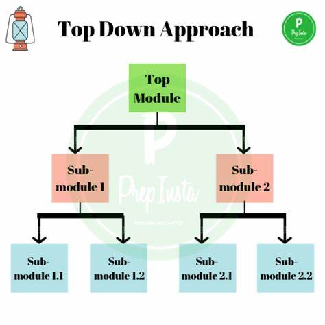

COMPUTER FUNDIMENTALS
THE METHODS AND PROCESSES THAT ARE USED TO SOLVE PROBLEMS.
The top-down approach is a problem-solving or design strategy where you start by understanding the overall system or problem and then break it own into smaller, more manageable components or sub-problems. It involves decomposing a complex system or task into simpler and more understandable parts, and then addressing each part in a systematic way.
The bottom-up approach is a problem-solving or design strategy where you start by understanding the smallest details or components of a system and then gradually build your way up to the overall solution. Instead of starting with a broad verview, you begin with the specifics and then integrate them into a larger framework

>Top-Down Approach
- Advantages:
- Holistic View: Starts with a high-level overview, providing a comprehensive understanding.
- Early Planning: Allows for early planning and identification of major components and their interactions.
- Structured Design: Encourages a structured design process, making it easier to manage and control.
- Clear Roadmap: Provides a clear roadmap for development or problem-solving.
- Efficient Resource Allocation: Resources can be allocated efficiently based on the overall system architecture.
- Disadvantages:
- Delayed Details: Detailed components are addressed later in the process, potentially leading to delays in understanding specific requirements.
- Less Flexibility: May be less flexible to changes or unexpected details that were not considered in the initial high-level planning.
- Risk of Oversimplification: There's a risk of oversimplifying complex components during the initial planning.
>Bottom-Up Approach
- Advantages:
- Early Details: Addresses detailed components or smaller problems early in the process, allowing for a deep understanding.
- Flexibility: More adaptable to changes or unexpected details as components are developed independently.
- Incremental Progress: Allows for incremental progress, making it easier to track and manage.
- Detailed Testing: Enables detailed testing of individual components before integration into the larger system.
- Disadvantages:
- Lack of Overall Direction: May lack an overall direction or structure until smaller components are assembled.
- Integration Challenges: Integration of individual components into a cohesive whole may present challenges.
- Potential for Redundancy: There's a risk of redundant efforts if multiple teams are working on similar components independently.
#IMAGE CREDIT: prepinsta.com